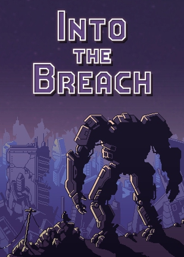
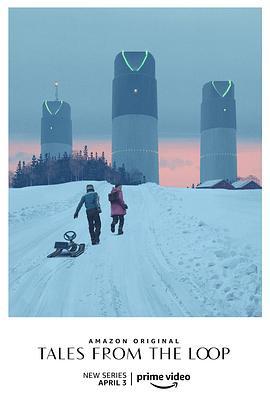

2021年10月 22 条
2021-10-31 12:48:25
 玩过 仙剑奇侠传七 ★★★☆☆
玩过 仙剑奇侠传七 ★★★☆☆
画面不错，unreal4确实是模板化了很多。剧情有点烂，而且战斗更烂，反正我就跑呗，队友打？这边建议直接开除叶灵纵和天地游的策划。表情依然呆板，bug依然堪比2077，再接再厉吧。。 //还是买了原价steam版，下次再方块就不买了 =，=
2021-10-25 06:06:16
 想看 芬奇 / Finch
想看 芬奇 / Finch
2021-10-22 13:55:20
在玩 仙剑奇侠传七
还是买了原价steam版，下次再方块就不买了 =，=
2021-10-21 18:21:25
想看 纽约的一个雨天 / A Rainy Day in New York
2021-10-20 18:27:27
上传了1张照片到 暗黑破坏神2：狱火重生 Diablo II: Resurrected 的 相册
2021-10-20 18:13:27
想看 长津湖
2021-10-19 19:14:19
看过 尚气与十环传奇 / Shang-Chi and the Legend of the Ten Rings ★★★★★
不错不错，诚意满满的中国元素，竹林、龙、山水。大量中文对话，老外和我都懵了😀 这次没走流媒体果然是对的，对于票房相当自信。全篇依然奥卡菲娜搞笑担当，而且加入复仇联盟了？！双彩蛋，加州旅馆听个够。真香！
2021-10-19 10:33:35

2021-10-17 20:26:34
上传了1张照片到 暗黑破坏神2：狱火重生 Diablo II: Resurrected 的 相册
2021-10-14 19:49:18
想看 大楼里只有谋杀 第一季 / Only Murders in the Building Season 1
2021-10-14 19:48:53
想看 如蝶翩翩 / 나빌레라
2021-10-14 19:48:29
2021-10-14 19:43:39

2021-10-11 08:08:06
2021-10-09 23:07:23
看过 沉默的真相 ★★★★★
一天时间看完，一次完美的犯罪，很有money heist 的感觉
2021-10-05 14:33:19
2021-10-03 23:29:35
 想看 辉夜大小姐想让我告白：天才们的恋爱头脑战 完结篇 / かぐや様は告らせたい ～天才たちの恋愛頭脳戦～ ファイナル
想看 辉夜大小姐想让我告白：天才们的恋爱头脑战 完结篇 / かぐや様は告らせたい ～天才たちの恋愛頭脳戦～ ファイナル
2021-10-03 23:29:18
想看 辉夜大小姐想让我告白：天才们的恋爱头脑战 迷你剧 / かぐや様は告らせたい ～天才たちの恋愛頭脳戦～ ミニ
竟然有迷你剧
2021-10-03 23:20:35
看过 我是大哥大 电影版 / 今日から俺は！！劇場版 ★★★★☆
感觉这次有不少尬时长的部分，不过搞笑和热血部分还是很不错的，所有演员回归相当赞了
2021-10-03 19:45:40
 玩过 影子工厂 Impostor Factory ★★★★★
玩过 影子工厂 Impostor Factory ★★★★★
Impostor一语双关真的是妙，一方面联系到了Impostor Syndrome说的是女主，另一方面说的是游戏多层级的人物objects。本来还以为会遇到狗血剧情，结果是这么精彩的续集，玩的我老泪纵横，就这么串起来了，真是欣慰。期待续作……
2021-10-03 10:55:15
看过 罪人 / The Guilty ★★★☆☆
落魄之人同情落魄之人，剧情似曾相识，主要是源代码的主演十分面熟
2021-10-01 21:06:29
看过 鱿鱼游戏 第一季 / 오징어 게임 ★★★★☆
和《密室逃生》很像，很多很多熟悉的面孔，但是结尾真的是无数个问号，什么事情比看望女儿重要？？？另外警察的故事线就这么不明不白结束了？？？